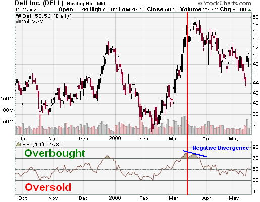

|
|

|
|
Join Now!
|
Relative Strength Index (RSI)Introduction
Developed by J. Welles Wilder and introduced in his 1978 book, New Concepts in Technical Trading Systems, the Relative Strength Index (RSI) is an extremely useful and popular momentum oscillator. The RSI compares the magnitude of a stock's recent gains to the magnitude of its recent losses and turns that information into a number that ranges from 0 to 100. It takes a single parameter, the number of time periods to use in the calculation. In his book, Wilder recommends using 14 periods. The RSI's full name is actually rather unfortunate as it is easily confused with other forms of Relative Strength analysis such as John Murphy's "Relative Strength" charts and IBD's "Relative Strength" rankings. Most other kinds of "Relative Strength" stuff involve using more than one stock in the calculation. Like most true indicators, the RSI only needs one stock to be computed. In order to avoid confusion, many people avoid using the RSI's full name and just call it "the RSI." Calculation
To simplify the formula, the RSI has been broken down into its basic components which are the Average Gain, the Average Loss, the First RS, and the subsequent Smoothed RS's. For a 14-period RSI, the Average Gain equals the sum total all gains divided by 14. Even if there are only 5 gains (losses), the total of those 5 gains (losses) is divided by the total number of RSI periods in the calculation (14 in this case). The Average Loss is computed in a similar manner. Calculation of the First RS value is straightforward: divide the Average Gain by the Average Loss. All subsequent RS calculations use the previous period's Average Gain and Average Loss for smoothing purposes. See the "Smoothed RS" formula above for details. The table below illustrates the formula in action.
Here's how lines 14 and 15 were calculated:
Note: It is important to remember that the Average Gain and Average Loss are not true averages! Instead of dividing by the number of gaining (losing) periods, total gains (losses) are always divided by the specified number of time periods - 14 in this case. When the Average Gain is greater than the Average Loss, the RSI rises because RS will be greater than 1. Conversely, when the average loss is greater than the average gain, the RSI declines because RS will be less than 1. The last part of the formula ensures that the indicator oscillates between 0 and 100. Note: If the Average Loss ever becomes zero, RSI becomes 100 by definition. Important Note: The more data points that are used to calculate the RSI, the more accurate the results. The smoothing factor is a continuous calculation that - in theory - takes into account all of the closing values in the data set. If you start an RSI calculation in the middle of an existing data set, your values will only approximate the true RSI value. SharpCharts uses at least 250 data points prior to the starting date of any chart (assuming that much data exists) when calculating its RSI values. To duplicate its RSI number, you'll need to use at least that much data also. UseOverbought/OversoldWilder recommended using 70 and 30 and overbought and oversold levels respectively. Generally, if the RSI rises above 30 it is considered bullish for the underlying stock. Conversely, if the RSI falls below 70, it is a bearish signal. Some traders identify the long-term trend and then use extreme readings for entry points. If the long-term trend is bullish, then oversold readings could mark potential entry points. DivergencesBuy and sell signals can also be generated by looking for positive and negative divergences between the RSI and the underlying stock. For example, consider a falling stock whose RSI rises from a low point of (for example) 15 back up to say, 55. Because of how the RSI is constructed, the underlying stock will often reverse its direction soon after such a divergence. As in that example, divergences that occur after an overbought or oversold reading usually provide more reliable signals. Centerline CrossoverThe centerline for RSI is 50. Readings above and below can give the indicator a bullish or bearish tilt. On the whole, a reading above 50 indicates that average gains are higher than average losses and a reading below 50 indicates that losses are winning the battle. Some traders look for a move above 50 to confirm bullish signals or a move below 50 to confirm bearish signals. Example The DELL example shows a number of extreme readings as well as a negative divergence. In Oct-99, RSI reached oversold for a brief moment to mark the low around 38. The next extreme reading (overbought) occurred after a large advance that peaked in Dec-99. RSI reached overbought levels in late Dec-99 and moved below 50 by the second week of Jan-00. The next oversold reading occurred in Feb. for another brief moment and marked the low around 35. By the end of Feb-00, RSI moved back above 50 and into overbought territory in March. A negative divergence formed in March and marked the high in the upper fifties. RSI and SharpCharts2
RSI is available on our SharpCharts2 charting tool. There is one box to choose the number of periods and the other boxes do not affect the chart. In the example box, RSI has been assigned 14, 20 and 30 periods. A swing trader might prefer 14-periods, while an investor may prefer 30-periods. Users are encouraged to test different RSI settings and judge for themselves which ones work best and suit their particular trading/investing style. Click here to see a live example of RSI. For more on oscillators, please see our ChartSchool article on how to use and interpret oscillators.
|
|
Join Now! |
Newsletter |
FAQ |
Glossary |
Terms of Service |
Privacy Statement
|
|
Data provided by: Unless otherwise indicated, all data is delayed by 20 minutes ©1999-2005 StockCharts.com All Rights Reserved |